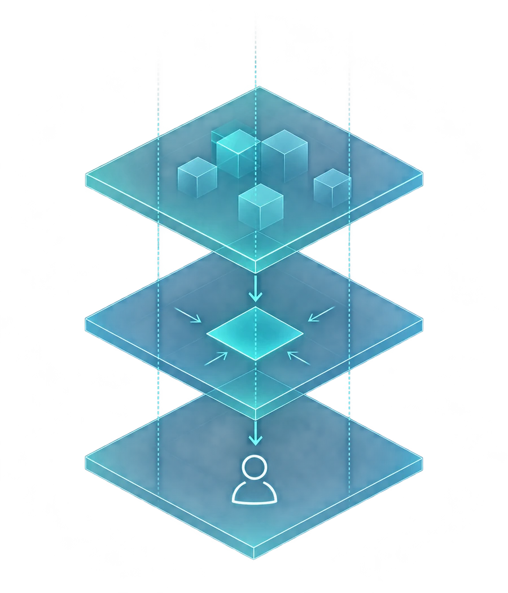

NIUEXA / CONSULENZA AI PER AZIENDE
Meno lavoro
ripetitivo.
Più controllo.
Prima misuriamo il Suo processo.
Poi costruiamo agenti AI sui sistemi che usa già.
30 minuti, gratuiti. Si parte da un processo reale.

TRE MODI PER LAVORARE INSIEME
Il punto di partenza
è il Suo lavoro.
Scegliamo dove l'AI può essere utile, prima di scegliere gli strumenti.
Automazione dei processi
Agenti AI collegati a CRM, gestionali e strumenti che usa già, con approvazioni sui passaggi critici.
Parliamo del Suo processoVisibilità sugli assistenti AI
Analizziamo come gli assistenti descrivono la Sua azienda e quali contenuti possono renderla più comprensibile.
Parliamo della Sua visibilitàFormazione per i team
Percorsi pratici costruiti sul lavoro quotidiano, con esempi e metodi che restano all'azienda.
Parliamo del Suo teamIL METODO NIUEXA
Prima misuriamo,
poi automatizziamo.
Un processo alla volta. Criteri condivisi per decidere se estendere, correggere o fermarsi.
- 01 / CAPIRE
Misuriamo.
Mappiamo attività, volumi, tempi ed eccezioni. Definiamo il punto di partenza e chi prende le decisioni.
Una misura iniziale, condivisa.
- 02 / REALIZZARE
Costruiamo.
Colleghiamo l'agente ai sistemi in uso, con fonti autorizzate e passaggi che richiedono una verifica umana.
Una soluzione sul Suo processo.
- 03 / VERIFICARE
Rimisuriamo.
Confrontiamo il risultato con gli stessi criteri iniziali. Decidiamo insieme cosa funziona e cosa va corretto.
Una decisione basata sui dati.

PERSONE, PRIMA DEGLI STRUMENTI
L'agente propone.
La persona decide.
Niuexa è una società di consulenza AI con sedi a Torino e Milano, fondata da Gregor Maric e Roberto Botto.
Lavoriamo sui sistemi che l'azienda usa già. Le eccezioni passano a una persona e, se l'AI non è la risposta al Suo problema, glielo diciamo.
Partiamo dal Suo casoIL PRIMO PASSO
Ci mostri
un processo.
In 30 minuti guardiamo insieme come lavora oggi la Sua azienda e valutiamo se l'AI può essere utile.
- 30 minutiPrima chiamata gratuita, senza impegno.
- Un caso concretoUn'attività, un flusso o un'esigenza del Suo team.
- Prossimi passi chiariSe proseguiamo, perimetro e costi in un preventivo scritto.
Rispondiamo entro 24 ore lavorative.
Parliamone.
Lasci i Suoi contatti. La ricontattiamo per fissare la prima chiamata.
I campi con * sono obbligatori.
PRIMA DI INIZIARE
Le domande
più frequenti.
Per tutto il resto, c'è la prima chiamata.
Cosa succede dopo aver inviato il modulo?
La ricontattiamo entro 24 ore lavorative per concordare una chiamata di 30 minuti. Partiamo da un processo o da un'esigenza del Suo team e valutiamo insieme i prossimi passi.
Quanto costa un progetto?
Dipende da processi, volumi, dati e integrazioni. Dopo l'analisi, definiamo perimetro e costi in un preventivo scritto. La prima chiamata è gratuita e senza impegno.
Dobbiamo cambiare i software che usiamo?
Partiamo dai sistemi già in uso. Verifichiamo le possibilità di integrazione con CRM, gestionali e strumenti del team prima di proporre una soluzione.
Chi controlla le decisioni dell'agente?
Definiamo insieme le attività che può svolgere e i passaggi che richiedono approvazione. Le eccezioni passano a una persona: l'agente propone, il team decide.
Servono già molti dati per iniziare?
Per la prima chiamata basta descrivere come funziona oggi il processo. Valutiamo poi quali dati servono, chi può accedervi e se l'automazione è sostenibile.